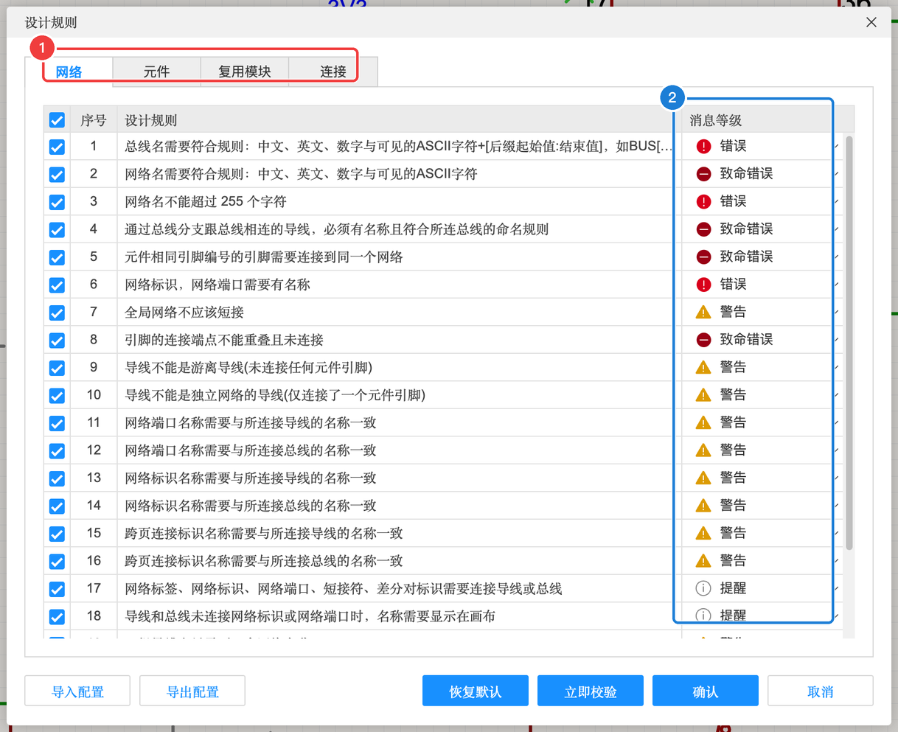
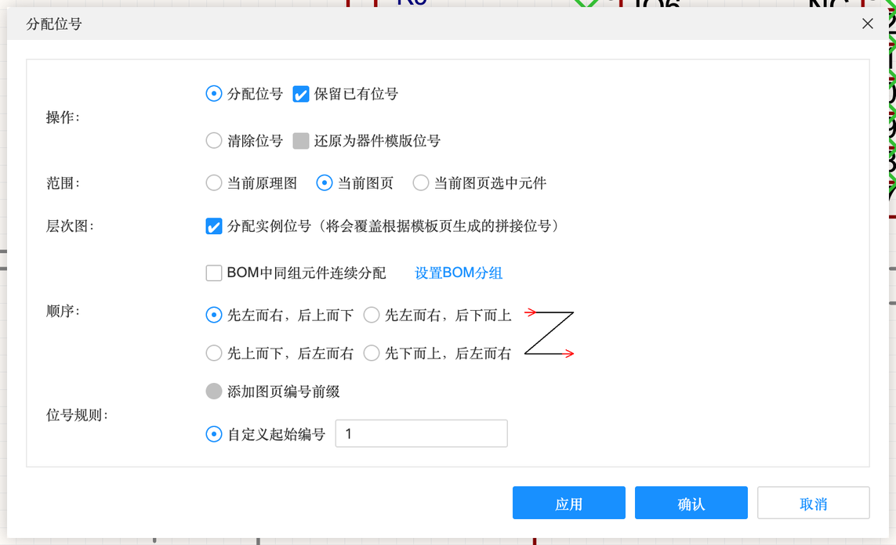
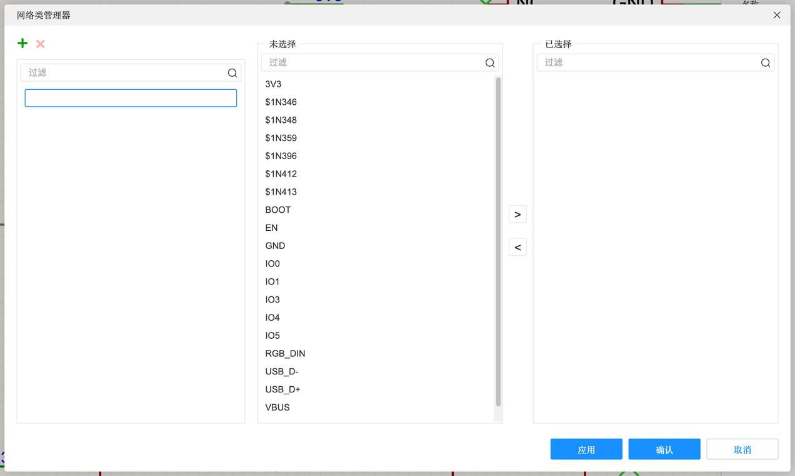
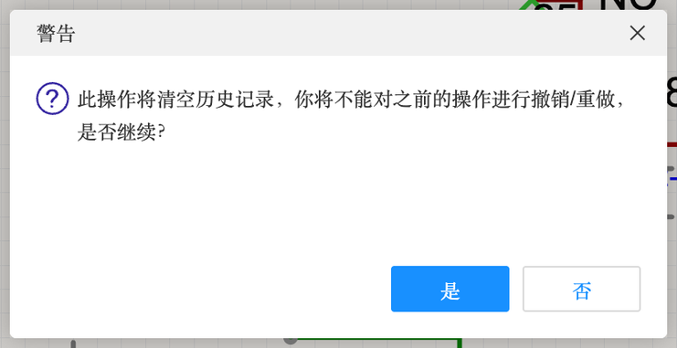

4.5 检查与 PCB 联动
画完原理图要做两件事：让软件按规则检查一遍，以及把它和 PCB 同步。这一页讲原理图设计规则与 DRC、分配位号、转 PCB / 从 PCB 导入、交叉选择、网络类与差分对，以及更新工程库。
检查#
原理图设计规则（设计 → 设计规则…）#

这里列出 DRC 会检查的每一条规则，以及违反时报什么等级。等级从严到松：致命错误 → 错误 → 警告 → 提醒。致命错误必须改，警告要看情况。实测「网络」分类下的部分规则：
| 规则（原文） | 等级 | 大白话 |
|---|---|---|
| 网络名需要符合规则：中文、英文、数字与可见的 ASCII 字符 | 致命错误 | 网络名别用奇怪的符号 |
| 总线名需要符合规则…如 BUS[0:5] | 错误 | 总线名要写成 名字[起:止] |
| 元件相同引脚编号的引脚需要连接到同一个网络 | 致命错误 | 同一个编号的两个脚（如 USB 的两个 VBUS）必须接同一个网络 |
| 网络标识，网络端口需要有名称 | 错误 | 不能放没名字的端口 |
| 全局网络不应该短接 | 警告 | VCC 和 GND 被一根线连上了 = 短路 |
| 引脚的连接端点不能重叠且未连接 | 致命错误 | 两个引脚叠在一起却没连线——多半是放歪了 |
| 导线不能是游离导线（未连接任何元件引脚） | 警告 | 画了一根两头都没接东西的线 |
| 导线不能是独立网络的导线（仅连接了一个元件引脚） | 警告 | 线只接了一只脚，另一头悬空 |
| 网络端口/网络标识/跨页连接标识名称需要与所连接导线的名称一致 | 警告 | 标签名和导线名对不上 |
| 网络标签、网络标识、网络端口、短接符、差分对标识需要连接导线或总线 | 提醒 | 标签放在空白处没贴到线上，等于没放 |
| 一组导线上只需要一个网络名称 | 警告 | 同一根线起了两个名字 |
| 差分对必须成对出现 | 错误 | 只标了 D+ 没标 D- |
每条规则前的勾可以取消（不检查），右边下拉可以改等级。底部有「恢复默认」「立即检查」「确认」。新手保持默认。
检查 DRC 与常见报错#
「设计」→「检查DRC」，结果在底部 DRC 面板（A-2、B-2 都实际做过）。两个案例里真实遇到过的：
| 报错 | 原因 | 修法 |
|---|---|---|
| 致命错误：元件 R1 缺少“封装”属性 | 用了没有封装的器件（如快捷器件、某些 API 放的元件） | 用器件管理器换成带封装的真实器件（4.1） |
| 警告：发现元件引脚悬空，建议放置非连接标识 | 有引脚没接任何东西 | 确实不用就打 ×（4.2） |
| 警告：元件的属性与供应商编号不匹配，建议使用器件标准化 | 元件属性和立创商城数据对不上 | 做器件标准化；案例 B 的 LED4 例外（见 B-3） |
| 信息：元件的引脚与焊盘没有对应 | 如 USB 外壳固定脚没有对应的原理图引脚 | 一般无害 |
分配位号（设计 → 分配位号…）#

分配位号
| 选项 | 含义 | 建议 |
|---|---|---|
| 操作 | 分配位号（可勾“保留已有位号”）/ 清除位号 / 还原为器件模板位号（R?、C?） | 分配位号 + 不保留 = 全部重排 |
| 范围 | 当前原理图 / 当前图页 / 当前图页选中元件 | 当前原理图 |
| 层次图 | 分配实例位号（层次图里同一模块多次使用时） | 默认 |
| BOM 中同组元件连续分配 | 同型号的元件编号连在一起（10kΩ 都是 R1～R5） | 看习惯 |
| 顺序 | 先左后右再从上到下 / 先上后下再从左到右 等 4 种，旁边有图示 | 先左右后上下 |
| 位号规则 | 添加图页编号前缀（1R1、2R1）、自定义起始编号 | 多页时可开 |
属性清单#
底部面板的「属性清单」标签：所有元件的属性列成一张大表（位号、值、封装、制造商、供应商编号…），可以像 Excel 一样逐格检查、直接修改。交作业前用来核对 BOM 很方便。
与 PCB 联动#
| 功能 | 位置 | 做什么 |
|---|---|---|
| 更新/转换原理图到 PCB | 设计菜单，⌥I | 把原理图的元件和连接送到 PCB（A-3）。改了原理图以后再做一次，PCB 只会增减变化的部分 |
| 从 PCB 导入变更 | 设计菜单 | 反过来：PCB 里改了位号、换了封装，同步回原理图 |
| 交叉选择 ⇧X | 设计菜单 | 在原理图选中元件，切到 PCB 时它也被选中（反之亦然），快速找到元件在板上的位置 |
| 交叉选择模式 | 设计菜单（可勾选） | 打开后两边实时联动选中 |
| 布局传递 ⌘⇧X | 设计菜单 | 按原理图里元件的相对位置，在 PCB 上把选中的元件摆成同样的布局，省得一个个拖。需要先选中元件 |
| PCB 设计规则… | 设计菜单 | 在原理图里就能打开 PCB 的设计规则（线宽、间距…） |
| 网络类管理器… | 设计菜单 | 见下 |
| 差分对管理器… / 等长网络组管理器… | 设计菜单 | 设置差分对（案例 B 在 PCB 里做过）、要求等长的一组网络 |
| 更新工程库… | 设计菜单 | 见下 |
| 重置元件唯一 ID… | 设计菜单 | 复制粘贴导致元件 ID 重复时用（日志里会提示“唯一 ID 重复”） |
网络类管理器#

网络类就是给一批网络起个组名，比如把 VBUS、3V3、VLED 放进“电源”类。然后在 PCB 设计规则里对“电源”类统一设置线宽 0.5 mm，就不用一根根改了。
更新工程库#

把工程库里的器件更新成系统库里的最新版本。⚠️ 会清空历史记录，之前的操作没法撤销了——更新前先保存，最好先建一个版本节点（3.2）。